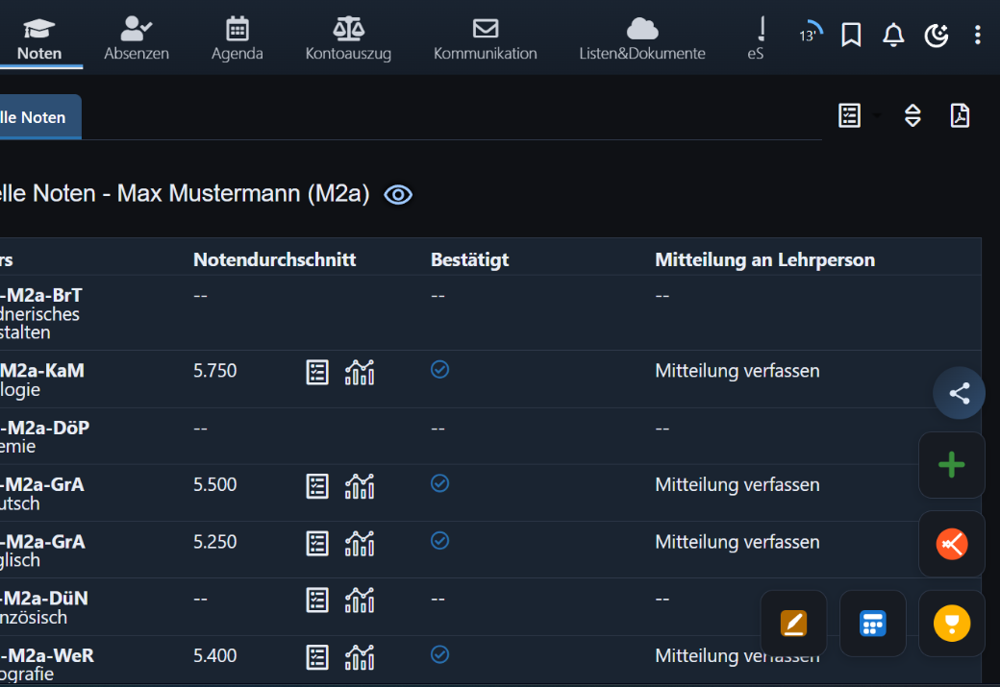
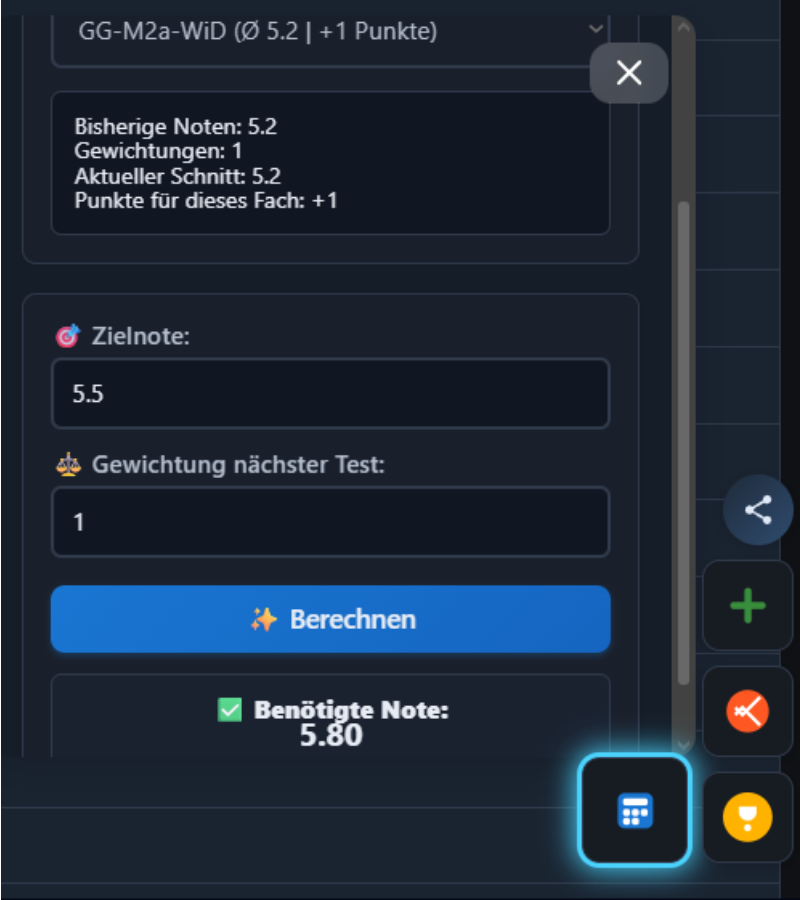
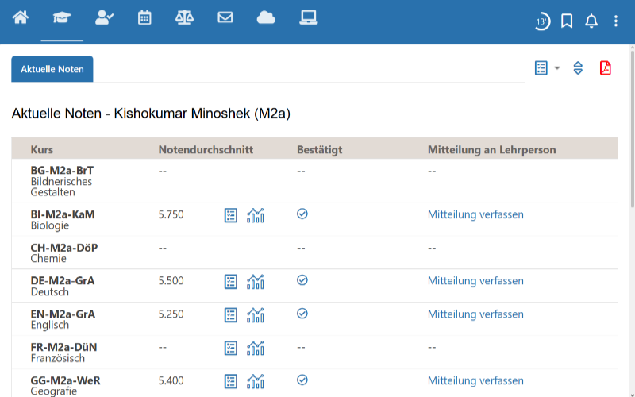

schulNetz, aber endlich brauchbar.
Panum Grades fügt einen Notenrechner, Live-Durchschnitte, Pluspunkte, Dark Mode, Achievements und mehr direkt in deine schulNetz-Seite ein. Keine Konten, keine Server, keine Kosten.

Alles, was du dir von schulNetz gewünscht hast.
Einmal installieren. Alle Tools. Direkt in deiner Notenseite.
Notenrechner
Füge eine hypothetische Note hinzu und sieh sofort, wie sich dein Durchschnitt verändert. Plane voraus vor der nächsten Prüfung.

Pluspunkte-Übersicht
Sieh alle Plus- und Minuspunkte pro Fach auf einen Blick. Fächer ausblenden oder zusammenführen nach Wunsch.
Noten-Simulator
Probiere jede beliebige Notenkombination aus und sieh das Ergebnis, bevor es passiert. «Was wäre, wenn ich eine 5 in Mathe bekomme?»
Verbesserungsanalyse
Sieh, welche Fächer das grösste Verbesserungspotenzial haben — und wo Risiken lauern.
Achievements & Gamification
Schalte Abzeichen für gute Ergebnisse, Serien und Fachmeisterschaft frei. Macht Noten ein bisschen spassiger.
Dark Mode
Ein vollständiges dunkles Design für schulNetz. Angenehm für die Augen, besonders bei nächtlichen Hausaufgaben.
Inkognito-Modus
Verstecke deinen Namen und persönliche Infos mit einem PIN. Perfekt, wenn jemand auf deinen Bildschirm schaut.
Volle Popup-Steuerung
Schalte jede einzelne Funktion im Extension-Popup ein oder aus. Behalte nur, was du wirklich brauchst.
schulNetz ohne vs. mit Panum Grades

- Einfache Notentabelle, keine Analyse
- Keine Durchschnittsberechnung
- Kein Dark Mode
- Keine Möglichkeit, zukünftige Noten zu simulieren
- Rechner, Simulator, Pluspunkte griffbereit
- Live-Durchschnitt & Verbesserungstipps
- Schöner Dark Mode
- Achievements für extra Motivation
Schluss mit blendend weissem schulNetz.
Ein vollständiges dunkles Design — nicht nur ein Filter, sondern ein komplett neues Farbschema für schulNetz.
In 30 Sekunden bereit.
Keine Anmeldung. Keine Konfiguration. Einfach installieren und loslegen.
Erweiterung installieren
Klicke auf «Installieren» für Chrome, Edge oder Firefox. Ein Klick genügt.
schulNetz öffnen
Melde dich wie gewohnt bei schulNetz an. Panum aktiviert sich automatisch.
Fertig. Tools nutzen.
Schwebende Buttons erscheinen auf deiner Notenseite. Klicke auf ein Tool, um es zu öffnen.
Deine Daten. Dein Gerät. Punkt.
Wir wollen deine Daten nicht. Wir können sie buchstäblich nicht einsehen.
100% Lokale Speicherung
Alle Noten, Einstellungen und Berechnungen werden im lokalen Speicher deines Browsers gespeichert. Es gibt keinen Server, keine Datenbank, keine Cloud. Nichts verlässt jemals deinen Computer.
Kein Tracking
Keine Analytik. Keine Cookies. Keine Telemetrie. Keine Benutzerkonten. Wir wissen nicht, wer du bist — und wollen es auch nicht.
Für immer gratis
Kein Premium-Abo. Keine Werbung. Keine «Gratis-Testphase». Panum Grades ist komplett kostenlos. War es immer, wird es immer sein.
Open Source
Jede Zeile Code ist öffentlich auf GitHub. Du kannst den Code lesen, forken, prüfen. Keine versteckten Überraschungen.
Häufig gestellte Fragen
Ist Panum Grades wirklich kostenlos?
Sind meine Daten sicher? Wo werden sie gespeichert?
Welche Browser werden unterstützt?
Funktioniert es auf dem Handy?
Kann meine Schule sehen, dass ich es benutze?
Verändert es meine echten Noten?
Ist es mit schulNetz verbunden?
Wie deinstalliere ich es?
Hol dir Panum Grades jetzt.
Gratis. Lokal. Kein Konto nötig. Wähle einfach deinen Browser.
Panum Grades ist unabhängig und nicht mit schulNetz oder dessen Betreibern verbunden.